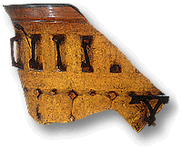

Did the Romans realise that they could make red glass using gold? Only a few examples of Roman glass, coloured by gold are known. Usually they made red glass using copper, but this was nearly always opaque. Roman glass makers were used to adding scrap metal and slag to colour their glass. The glass of the Lycurgus Cup may therefore have been made by an accident, which was difficult to repeat. Perhaps the glassmaker did not know that the ingredient he had added contained silver and gold.
The fragment of glass seen here changes colour in a similar way but the colours are less impressive. This may have been an attempt to reproduce the Lycurgus Cup effect that did not work.
For a full list of publications: Scientific Publications